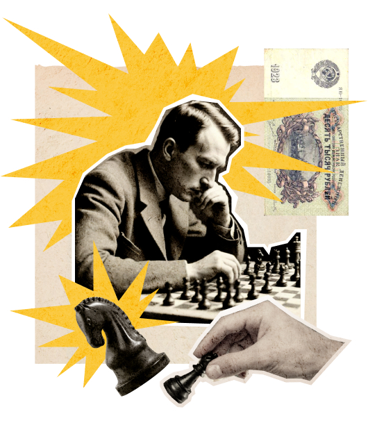

Чтобы поддержать международный Васюкинский турнир посетите
лекцию на тему:
«Плодотворная дебютная идея»


и Сеанс одновременной игры в шахматы на 160 досках
гроссмейстера О. Бендера
Место проведения:
Клуб «Картонажник»
Дата и время мероприятия:
22 июня 1927 г. в 18:00
Стоимость входных билетов:
20 коп.
Плата за игру:
50 коп.
Взнос на телеграммы:
100 руб.
21 руб. 16 коп.
Этапы преображения васюков
Будущие источники обогащения васюкинцев
1
Строительство железнодорожной магистрали Москва-Васюки
2
Открытие фешенебельной гостиницы «Проходная пешка» и других
небоскрёбов
3
Поднятие сельского хозяйства в радиусе
на тысячу километров: производство овощей, фруктов, икры, шоколадных конфет
на тысячу километров: производство овощей, фруктов, икры, шоколадных конфет
4
Строительство дворца
для турнира
для турнира
5
Размещение гаражей
для гостевого
автотранспорта
для гостевого
автотранспорта
6
Постройка сверхмощной радиостанции для передачи всему
миру
сенсационных результатов
7
Создание аэропорта «Большие Васюки»
с регулярным отправлением почтовых
самолётов и дирижаблей во все концы света, включая Лос-Анжелос и Мельбурн
с регулярным отправлением почтовых
самолётов и дирижаблей во все концы света, включая Лос-Анжелос и Мельбурн

Участники турнира
3 / 6